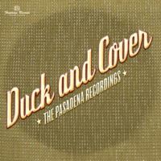

Duck and Cover - The Pasadena Recordings (Album, 2010)
01 - Pick Up My Heart (2:58)
02 - The Way You Look At Me (2:27)
03 - Funnel Of Love (3:23)
04 - You Sound So Angry (3:07)
05 - Lovestruck (3:45)
06 - One Tear Away (3:34)
07 - Time Has Forgot (3:43)
08 - Square Head Boogie (2:32)
09 - Can't Stop Leavin You (3:08)
10 - Wall Of Shame (3:26)
11 - Window Shopping (2:27)
12 - One Way Love (2:46)
13 - Fight Or Flight (3:24)
14 - Lonesome Train (2:13)
© Heptown Records :: [HTR045]
Notes
Review
149/366 (Project 366)
Fabulously beautiful Country. And not only! It is also excellent Hillbilly, authentic Rockabilly and somewhat old fashioned smooth Rock'n'Roll. This is not enough? Well, female vocalist with very charming voice. Some tracks are just perfect, full album is just as dream come true. Quality of recordings is also with great mood.